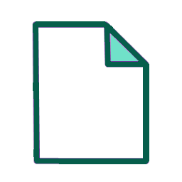
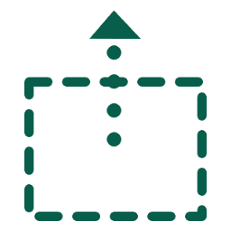
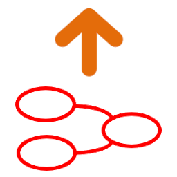
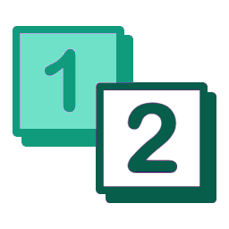
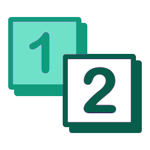
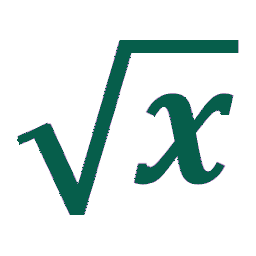

")
")


 

")
")
")

| Name: | |
| Author: |
Yes
No
| Name: | |
| Author: | |
| Snap to alignment grid with pixels resolution | |
| Time step: | |
| Run length: time steps | |
| Name: | |
| Actor: |  |
| Prefix: | |
| Actor: |
Yes
No